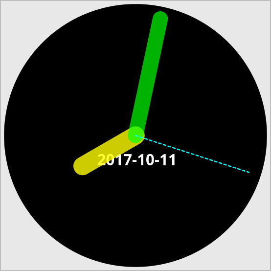

PIPEGLADE
Graphical User Interfaces, The UNIX Way
Pipeglade is a helper program that displays graphical user interfaces for other programs. It renders the GUI definition found in a GtkBuilder file (created using the Glade Interface Designer), and communicates with the main program solely via pipes or fifos.
To have its GUI rendered by pipeglade, a program must be able to
- send plain text commands to standard output or a named pipe and/or
- receive and parse simple plain text messages from standard input or a named pipe.
See below for the set of widgets accessible via pipeglade. (Widgets of any kind can grab focus and change visibility, sensitivity, style, size, and tooltip.)
WIDGET GALLERY


EXAMPLE
The shell script clock.sh uses pipeglade to display an analog clock on the interface defined in the GtkBuilder file clock.ui. The script was also used to generate the image below.
SOURCE CODE
- Download pipeglade v4.8.0: pipeglade-4.8.0.tar.gz
- GitHub